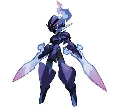

Esta pagina va a hablar sobre mi pokemon farovito
Ceruledge luce una armadura cargada de rencor y blande espadas forjadas con energía ígnea y fantasmal. Durante los combates, se transforman en espadones que aumentan el poder del Pokémon. Los cortes de estos espadones infligen heridas por las que rezuma la energía vital.
